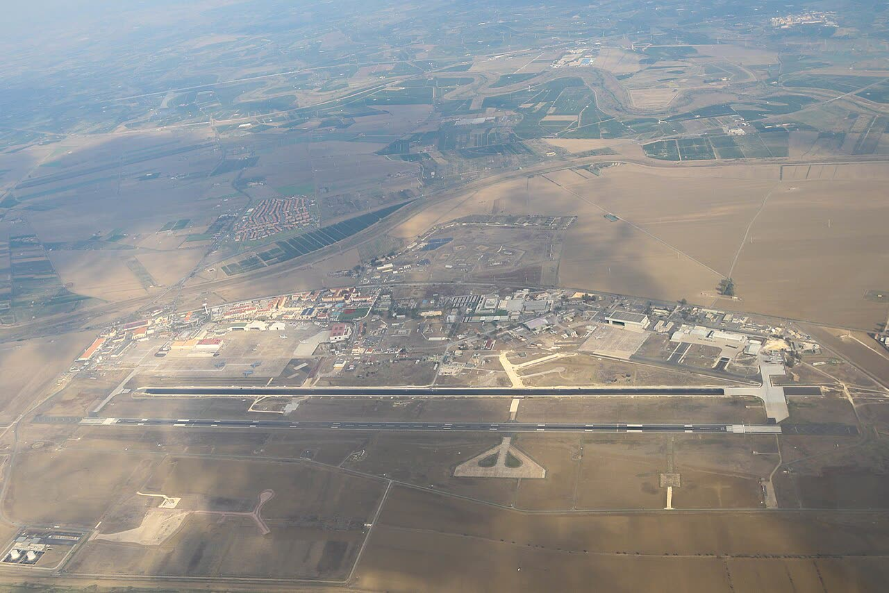
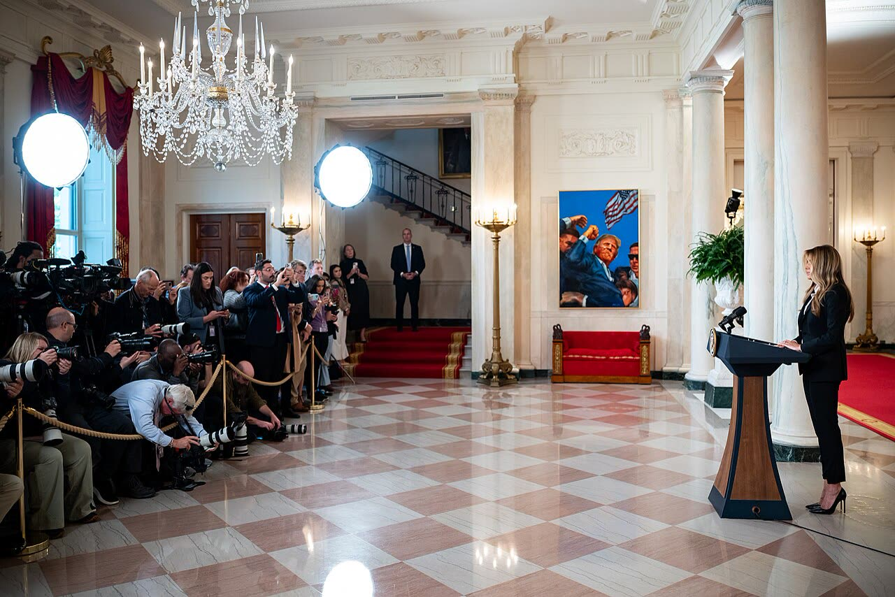

05.11.2026
Parla un deputato, non il governo di Teheran, e i titoli italiani gli mettono tra virgolette parole che non sono le sue: il rischio vero è il criterio non pubblico con cui Roma decide l'uso delle basi, e va detto in Parlamento.
05.11.2026
Trump dice che la benzina è salita un po' e per poco: in Italia sono otto mesi di rincari, e sull'IVA, calcolo nostro per litro, lo Stato incassa più di quanto restituisce. Entro il 7 novembre il governo restituisca l'extragettito, su benzina e gasolio.
04.11.2026
Vance dice che gli elettori hanno bocciato la guerra, Trump la rivendica e incolpa la benzina. Il voto non la ferma prima del 2027: l'Italia, che la paga in bolletta, chieda adesso che finisca.

04.11.2026
Giovedì è un discorso, non un negoziato, e la tregua l'aveva chiesta prima il Papa. Roma tace: la sua leva è il voto sulle sanzioni a Bruxelles, da usare a viso aperto.